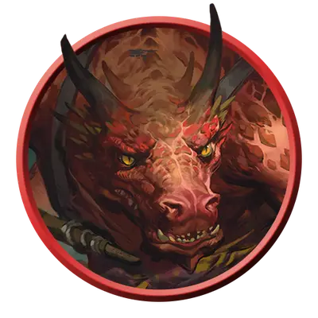

Кобольд-воитель
Kobold Warrior
Маленький Дракон, Нейтральный

Класс Защиты 14 Инициатива +2 (12)
Хиты 7 (3к6 - 3)
Скорость 30 футов
| мод | спас | ||
|---|---|---|---|
| СИЛ | 7 | −2 | −2 |
| ЛОВ | 15 | +2 | +2 |
| ТЕЛ | 9 | −1 | −1 |
| мод | спас | ||
|---|---|---|---|
| ИНТ | 8 | −1 | −1 |
| МДР | 7 | −2 | −2 |
| ХАР | 8 | −1 | −1 |
Чувства Тёмное зрение 60 футов, пассивное Восприятие 8
Языки Общий, Драконий
Опасность 1/8 (25 опыта; БВ +2)
Особенности
Тактика стаи. Кобольд совершает с Преимуществом броски атаки по существам, если его союзник, не имеющий состояния Недееспособный, находится в пределах 5 футов от цели.
Чувствительность к солнечному свету. Находясь на солнечном свету, кобольд совершает с Помехой все проверки характеристик и броски атак.
Действия
Кинжал. Бросок рукопашной или дальнобойной атаки: +4, досягаемость 5 фт. или дистанция 20/60 фт. Попадание: 4 (1к4 + 2) Колющего урона.
Бонус мастерства +2
Среда обитания Арктика, Болота, Город, Горы, Леса, Прибрежье, Подземье, Пустыня, Холмы
Сокровища Оружейные
Кобольды
Пройдохи и слуги цветных драконов
Кобольды — трусливые родственники цветных драконов, которые служат своим драконьим повелителям в качестве воинов и слуг. Эти склочные чудища во всём стараются подражать своим хозяевам, исполняют волю драконьих повелителей и выступают в роли их воинов и слуг, хотя их размер и безрассудство плохо помогают в этом. Свой недостаток свирепости кобольды компенсируют усердием и находчивостью. Они особенно изобретательны в создании ловушек и подготовке засад.
Цвет чешуи кобольдов зависит от того, какие цветные драконы обитают рядом с их норами. В редких случаях у кобольдов могут проявляться черты металлических драконов или других драконоподобных существ.
Используя тактику «бей и беги», кобольды воители устраивают налёты на вражеские силы и защищают своё жилище. Чтобы избежать излишней опасности, они часто устанавливают самодельные ловушки.